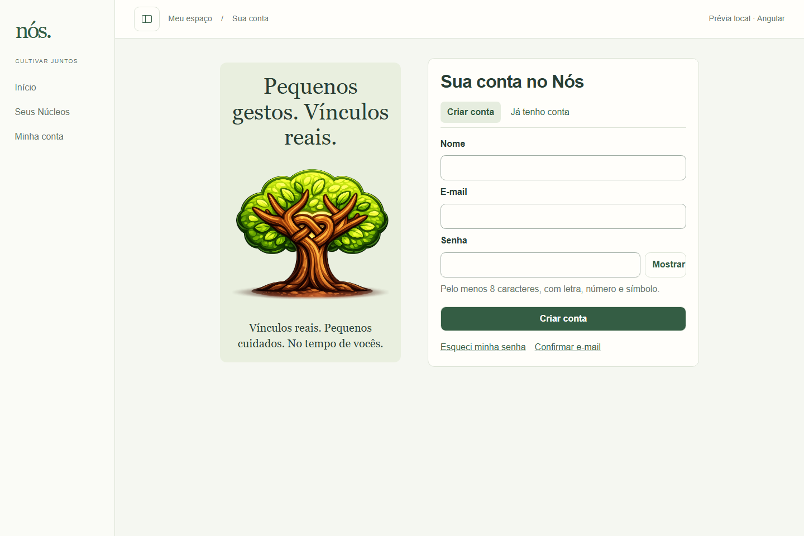
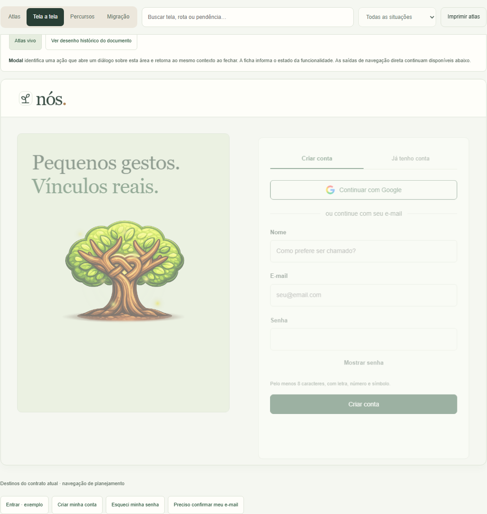
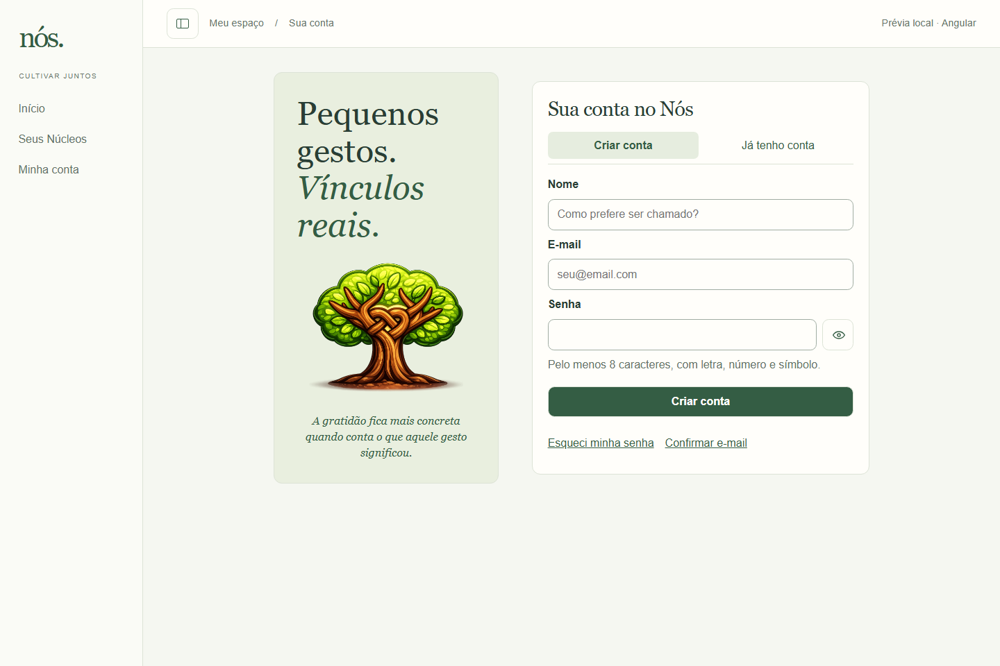
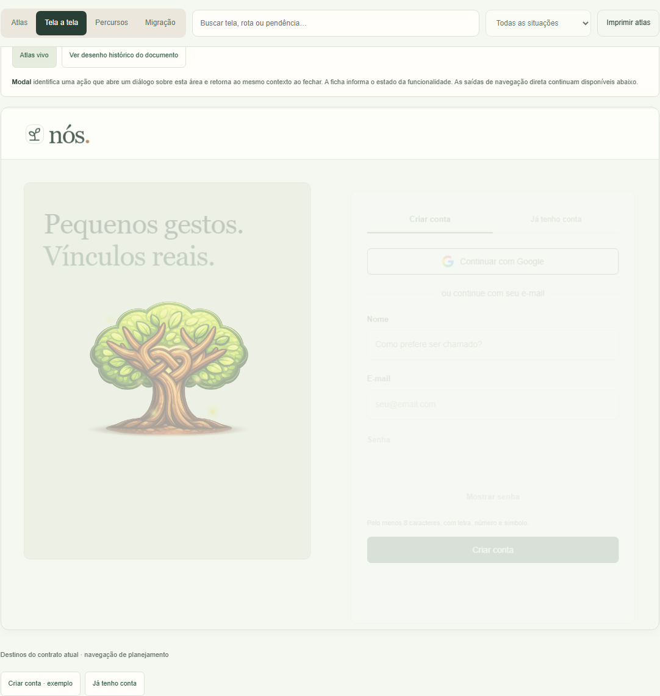
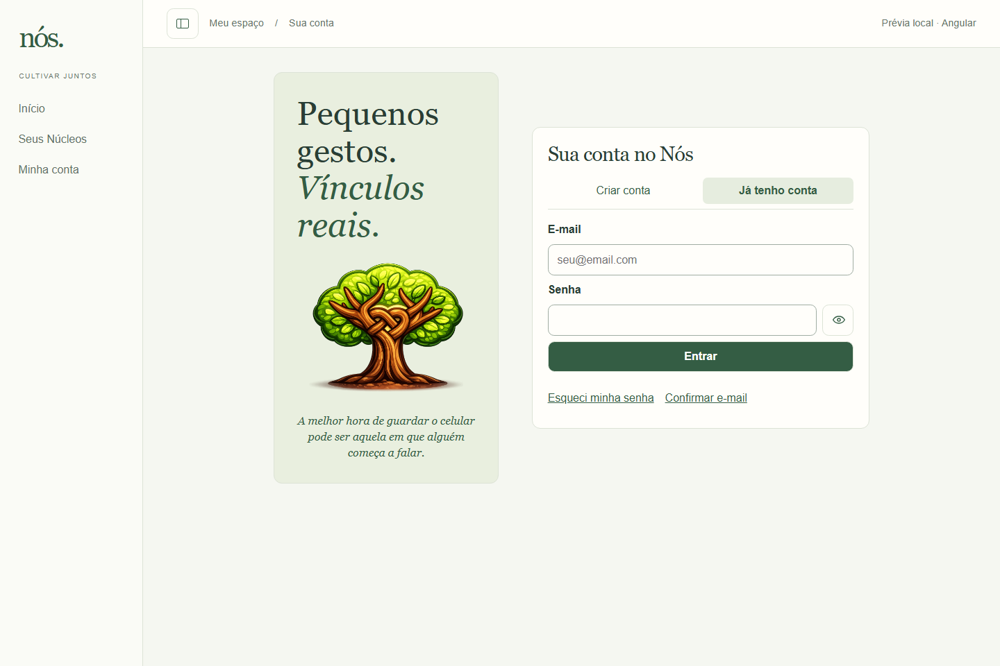
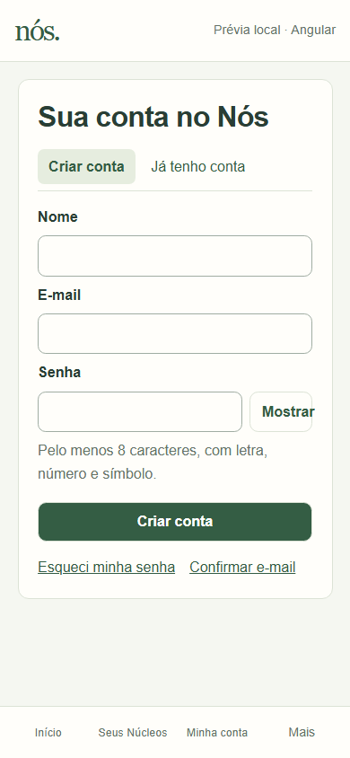
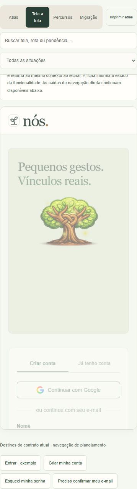
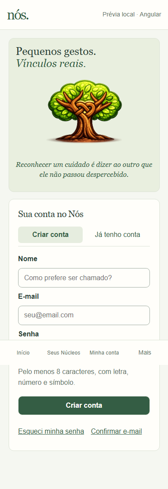
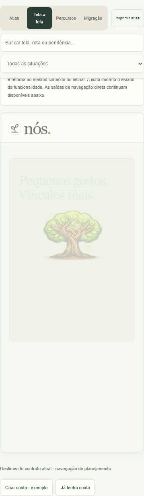
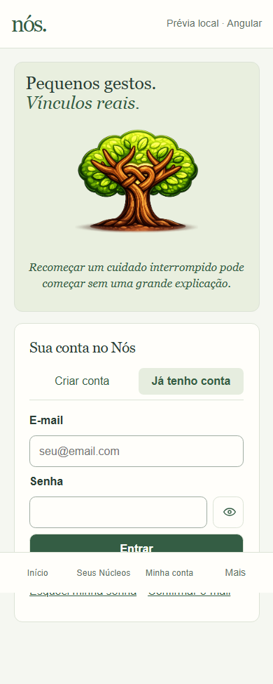

Referência Atlas v3.11.1 e prévia local Chromium. Angular antes e depois capturado sem conta conectada. O Google não estava habilitado no ambiente local. O depois usa movimento reduzido para mostrar o estado estável. O login antes usa o mesmo formulário do cadastro, com o campo Nome oculto.









